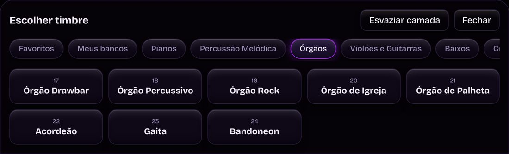
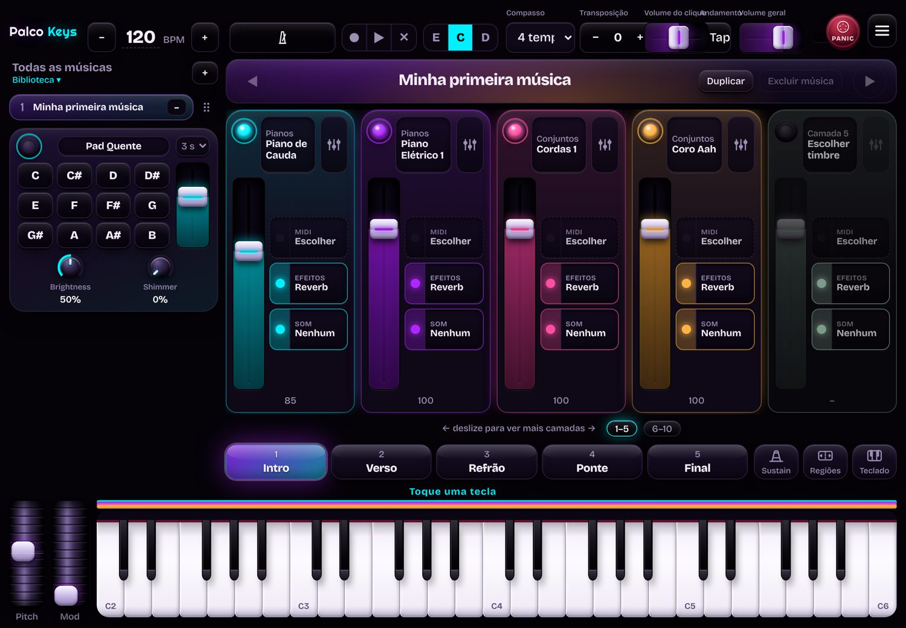
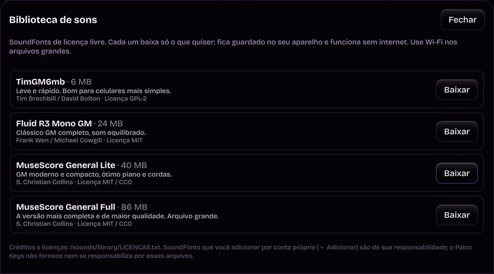

Camadas e seções
Empilhe até 10 timbres por seção, cada um com seu fader de volume e sua região do teclado. Intro, Verso, Refrão, Ponte e Final guardam o som daquele momento, com troca instantânea ou em transição suave.

Camadas de timbres, seções por música, pad contínuo e metrônomo. Tudo numa tela feita para tocar, no computador e no tablet Android.

O que o app faz
Cada música guarda seus timbres e volumes. Na hora de tocar, você troca de seção com um toque.
Empilhe até 10 timbres por seção, cada um com seu fader de volume e sua região do teclado. Intro, Verso, Refrão, Ponte e Final guardam o som daquele momento, com troca instantânea ou em transição suave.

Um tapete de som para sustentar a música, com controles de brilho e cintilação.
Toque ao lado do clique, com compasso e andamento. Grave uma pista simples para ouvir o timbre na caixa de som sem estar tocando.
Monte a lista de músicas do culto ou do show, com transposição por música. Exporte um backup e leve para outro aparelho.
Depois de aberto, o app e os sons ficam guardados no aparelho. Sem depender de sinal no local do evento.
Conecte o teclado por USB ou use o teclado da tela. Pitch, modulação e sustain respondem como você espera.
Pianos, órgãos, cordas, metais, baixos, bateria e mais, já incluídos. Você escolhe e toca.
Preço
Sem mensalidade e sem renovação. Antes de comprar, você testa 7 dias grátis, sem cartão.
Individual
Pagamento único.
Perguntas frequentes
Não. Você paga uma vez e o app é seu. Não existe mensalidade nem renovação obrigatória.
No computador com Windows, macOS ou Linux, usando Chrome ou Edge. Também funciona em tablet com Android. iPad em breve.
Até 2 aparelhos com o mesmo e-mail, por exemplo um computador e um tablet.
Para entrar, sim. Depois de entrar, o app funciona sem internet. Se ficar mais de 7 dias sem conectar, ele pede para conectar de novo.
Você informa seu e-mail e usa o app por 7 dias, sem cartão. Para continuar depois do teste, faz a compra.
Sim. Você pode desistir da compra em até 7 dias depois de pagar, como garante o Código de Defesa do Consumidor.
Sim. Conecte um teclado MIDI ao aparelho, por USB ou Bluetooth, conforme o que o seu aparelho aceita.
Os sons General MIDI já vêm no app. Você pode instalar outros bancos de sons (.sf2) na Biblioteca.

Biblioteca de sons
O Palco Keys já vem com os sons General MIDI. Na Biblioteca você baixa SoundFonts de licença livre, e eles ficam organizados em pastas, um banco por vez. Você também pode adicionar seus próprios arquivos .sf2 e .sf3.
SoundFonts que você adicionar por conta própria são de sua responsabilidade. O Palco Keys não fornece nem responde por esses arquivos.
Instalar
O Palco Keys é um app web: o ícone aparece como qualquer outro app e abre em tela cheia.
No Windows e no macOS, use o Chrome ou o Edge. É neles que o teclado MIDI funciona.